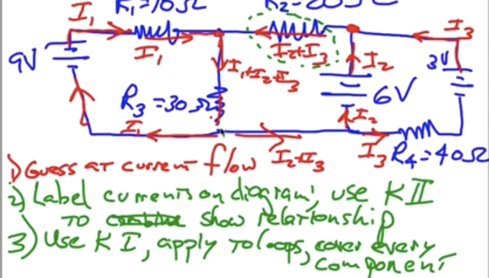
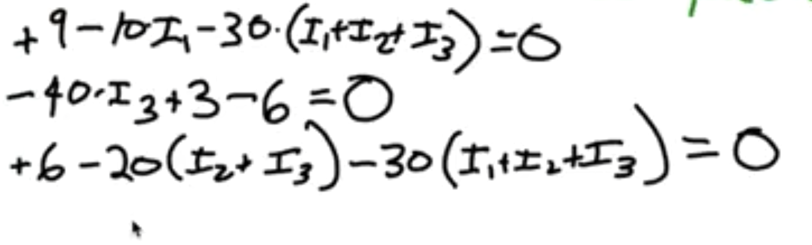

Electrostatics/Circuits Test Prep
Or David's Constant Physics Anxiety
Types of Problems
Problems related to Electrical Force and Fields
Apply the equation \(F = k\frac{q_1q_2}{r^2}\) for most problems.
- Remember that dividing by 106 to account for the microcoloumbs is just flat out incorrect.
- Remember that you can apply other equations like \(\vec{F}=ma\).
- To calculate field strength, use the equation $k\frac{Q}{r
^2}$, where \(Q\) is the charge creating the field.
- For questions that supply the strength of the field at the point of the second charge, just multiply the second charge by the strength to get force magnitude.
- For scarier multiple field questions, break it down into net force and use sin(x) and cos(x).
Interacting with Field Visualizations
Remember that density of lines in the field line view represents magnitude and that a test charge would move tangent to the field lines.
Resistance
Use resistance formula \(R = \rho\frac{L}{A}\).
DC Circuits
Remember \(I = \frac{\Delta V}{R}\) and \(P = IV\) for filling in table values.
Remember Kirchoff's Laws:
- Net voltage change throughout any closed loop in a circuit must be zero (think like GPE and a rollercoaster ride).
- Current coming into a node is equal to current coming out of a node.
There are two options when it comes to dealing with complex circuits
- Combining all of the resistors into one resistor using the parallel resistor formula (\frac{1}{R} = \frac{1}{R_1} \frac{1}{R_2}) and some addition for the resistors in series. Use this to calculate the original current. Then, isolate the resistors that are not part of something complicated and calculate their voltage drops so that you can be sure of how much the voltage needs to drop within the complicated portions. Then, choose random paths within the complicated parts knowing that no matter what the voltage needs to drop by the amount you just calculated. If you need to know the current coming into a parallel portion of a complicated part, just combine the resistors and use the voltage drop you know is necessary to calculate current at beginning.
- Be a masochist and use Kirchoff's laws to manually solve a large system of equations.
DC Circuits (Multiple Batteries)
Guess current flow, illustrate how currents combine to help with Kirchoff's Laws, then apply Kirchoff's first law to get systems of equations you can solve.
Assign random directions for each branch with a battery. It doesn't matter and will just be negative if you're wrong. Use Kirchoff's second law to get a simple equation for a junction.
Note that if you go through a battery in direction it emits electrons, you gain voltage and vice verca? (minus to plus is gain, plus to minus is drop)
For the loops just choose a direction to go in and subtract the resistors times whatever current you may encounter, whilst subtracting/adding voltages from batteries you encounter. IT DOESN'T MATTER AND WORKS ITSELF OUT.
See following images:


Questions about Circuits
Why does current have to stay the same through a node?
If it didn't the current coming in would not be equal to the current coming out and there would be some sort of pileup within the node and that's not ok.
Why is voltage 0 at the end of a battery?
Refer to Fields exploration for why voltage zero-points are arbitrary and set as convention. Think how origins on a graph are just a tool, and could be anywhere.
Why isn't voltage continous?
Voltage is continous within resistors but not outside of it because in theory wires are basically nothing (they have no resistance whatsoever so electron flow is instantaneous) so voltage does not drop continously within them.
Why does voltage need to drop?
We define voltage differently than the standard definition with fields and because of this voltage drops naturally because zero is defined to be that way and you are getting closer to zero. Again, think of it like an origin that you're getting closer to.
Why do larger resistors have larger drops?
Since voltage drops continously within resistors, a larger resistor/more resistive resistor has more continous change and therefore larger voltage drop. (The wire between them may just be a little slit in which you can measure voltage in one larger resistor).